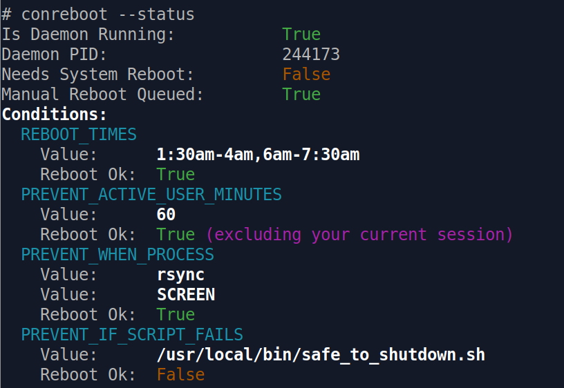

conreboot - A Conditional Rebooter
Triggers a reboot on a Linux system when preset conditions are met. The primary condition is that the server indicates that it needs to be rebooted. Other conditions are defined in a config file on the server.

Dependencies
- bash
- systemd
- awk
- bc
- update-notifier-common (Debian/Ubnutu)
- yum-utils/dnf-utils (RHEL/Rocky)
The Reboot
The conreboot service will reboot the server via a shutdown -r command when the server indicates that it requires a restart (due to package/kernel upgrades) or if the administrator issues a manually scheduled reboot to occur. In addtion to this, the conreboot service checks the config file to ensure those conditions also match, for example at what time is it safe to reboot.
The Command
The conreboot command is central to the service. It has the following flags:
--help/-hDisplay help about the flags.--status/-sDisplay status of conreboot service, if any reboot is pending, and status of each condition that must happen before a reboot could happen.--manual/-mSchedule a manual conreboot to happen as soon as all conditions are safe, even if the server does not indicate the need to reboot.--cancel/-cCancel a scheduled manual conreboot.--daemon/-dStart as a conreboot daemon; used by the systemd service unit.--config/-f FILEUse alternateFILEinstead of default config file.
The Config File
Each host machine the conditional reboot script will be run on must have a config file setup or the script will do nothing and exit.
The default config location is at: /etc/conreboot.cfg.
Changes to the config file will not take effect until the conreboot service is restarted.
The config has following settings:
REBOOT_TIMESSHUTDOWN_TIMEPREVENT_NOLOGINUPDATE_MOTDBROADCAST_REBOOTPREVENT_ACTIVE_USER_MINUTESPREVENT_WHEN_PROCESS(multiples allowed)PREVENT_IF_SCRIPT_FAILS(multiples allowed)PRE_SHUTDOWN_COMMAND(multiples allowed)
REBOOT_TIMES
Default value: never
This sets the allowed times when a reboot can occur. Format is a comma-delimited list
of time ranges. Times are in the format such as 3am-7:30am or 11:30pm-2:30am
When set to never, conreboot will not trigger a reboot.
REBOOT_TIMES=12pm-6am
REBOOT_TIMES=10pm-1am,4:30am-6am
REBOOT_TIMES=never
SHUTDOWN_TIME
Default: +1
Sets the TIME argument to the shutdown command. Default is 1 minute warning before shutdown commences.
Setting to +0 or now will result in immediate shutdown once it is determined to be okay to reboot.
SHUTDOWN_TIME=now
SHUTDOWN_TIME=+5
PREVENT_NOLOGIN
Default: 0
When rebooting with a SHUTDOWN_TIME that is not immediate, the
system will prevent new logins within the last 5 minutes before
reboot. Setting this config setting to 1 will have conreboot
remove the /etc/nologin or /var/run/nologin file which normally
would prevent those logins.
PREVENT_NOLOGIN=1
UPDATE_MOTD
Default: 0
Setting this value to 1 will have conreboot add messages into the
login message-of-the-day when a reboot in needed, or if a reboot
is actively scheuduled.
UPDATE_MOTD=1
BROADCAST_REBOOT
Default: 1
Setting this value to 0 will suppress the periodic broadcast wall
messages sent to logged in users once a reboot is scheduled.
Effectively, when set to a non-1 value, the --no-wall flag will be
passed to the shutdown command.
BROADCAST_REBOOT=0
PREVENT_ACTIVE_USER_MINUTES
Default: 60
Prevent reboot if there are active users logged in, where an active user is those who have terminal
activity with the given number of minutes. Set to 0 to allow rebooting while users are active.
Note that this does not count X11 sessions.
PREVENT_ACTIVE_USER_MINUTES=120
PREVENT_ACTIVE_USER_MINUTES=0
PREVENT_WHEN_PROCESS
Default: nothing
Prevent reboot if the listed process is running. This can list just the process
or the process with flags.
Multiple definitions are allowed.
PREVENT_WHEN_PROCESS=mysqldump
PREVENT_WHEN_PROCESS=rsync -av --del /var/
PREVENT_IF_SCRIPT_FAILS
Default: nothing
Prevent reboot is the given script or Bash shell command returns anything other than 0. Will do nothing if value is empty.
Note that this command should be able to be executed quickly, and repeatedly, as the conditional reboot may continually run this command every minute while waiting to reboot.
Multiple definitions are allowed.
PREVENT_IF_SCRIPT_FAILS="! [[ -f /tmp/my_service.lock ]]"
PREVENT_IF_SCRIPT_FAILS="/usr/local/bin/safe_to_reboot.sh"
PRE_SHUTDOWN_COMMAND
Default: nothing
When set, this script or Bash shell command will run just prior to the shutdown command. The shutdown
command will commence regardess of the exit code of this command.
Multiple definitions are allowed.
PRE_SHUTDOWN_COMMAND="killall -9 troublesome_processes"
PRE_SHUTDOWN_COMMAND="/usr/local/bin/send_notifications"
Debugging
To enable debug messages, set DEBUG=1.
DEBUG=1 coreboot --daemon
To prevent trigging the shutdown command and any PRE_SHUTDOWN_COMMANDs, set MOCK=1.
MOCK=1 coreboot --daemon
Author and Copyright
Written by Nathan Collins (npcollins/gmail/com)
Copyright © 2020 Michigan State University Board of Trustees
License
Released under the MIT License